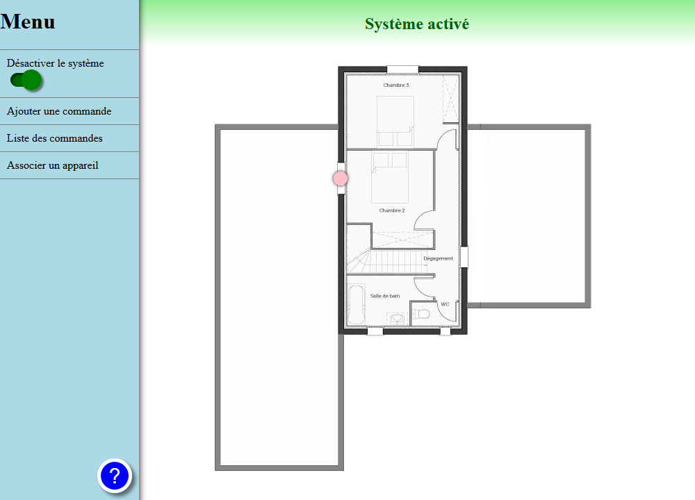
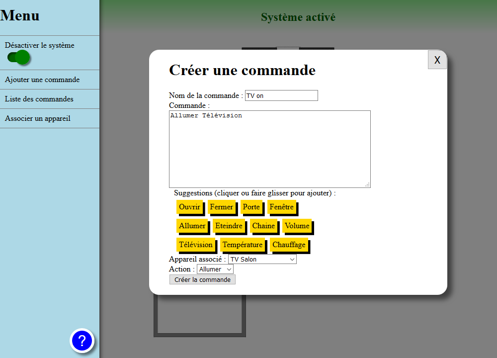
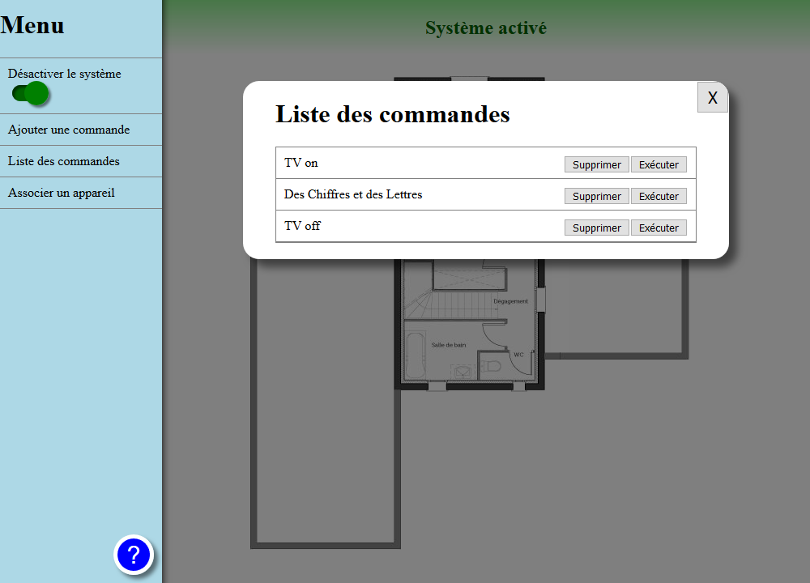

BlaBla-Control mode d'emploi
Bienvenue dans le mode d'emploi de l'application.
Cliquez sur une catégorie pour l'aide correspondante:
Ecran princial

Sur cet écran, vous pouvez consulter l'emplacement des appareils sur le plan de votre maison.
placez le curseur de la souris sur un cercle de couleur pour voir le statut de l'appareil correspondant.
La bande de couleur en haut de l'écran permet de connaitre l'état actuel du sistème (vert = actif, rouge = inactif) ou de vous informer si une action est requise.
Le menu à gauche de l'écran permet d'effectuer diverses actions:
- Le premier bouton permet d'activer et de désactiver le système.
- "ajouter une commande" ouvre le menu permettant d'ajouter une commande.
- "Liste des commandes" permet de consulter et modifier la liste des commandes.
- "Associer un appareil" permet de connecter un nouvel appareil au système.
Associer un appareil
Avant d'utiliser un appareil, il doit être ajouté au système:
- Cliquer sur "Associer un appareil" dans le menu. Une fenètre apparait.
- Dans la fenètre, saisir le nom et le type de l'appareil que vous voulez associer.
- Le plan s'affiche. Cliquez à l'emplacement correspondant à l'appareil que vous ajoutez.
- Un message de confirmation apparait et un nouveau repère correspondant à l'appareil est ajouté au plan. Cela signifie qu'il est prêt à être utilisé.
Créer une commande

Pour créer une commande, on procède de la manière suivante:
- Cliquer sur "ajouter une commande" dans le menu. Une fenètre apparait.
- Dans la fenètre, taper le nom de la commande.
- Saisir la commande que vous voulez donner. Utilisez de préférence des mots simples à retenir. Des suggestions de mots sont fournies et peuvent être insérées en cliquant ou via un glisser-déposer.
- Spécifiez l'appareil qui doit effectuer l'action ainsi que la nature de cette action. D'autres champs peuvent apparaître selon le type d'action choisi.
- Cliquez sur "Créer la commande" et confirmez.
Vous pouvez annuler la création de la commande à tout moment au moyen du bouton "X" en haut du formulaire. Les données entrées ne seront alors pas enregistrées.
Liste des commandes

Cliquez sur "Liste des commandes" pour ouvrir la liste. Vous pouvez ensuite tester les différentes commandes avec le bouton Exécuter. Si vous voulez enlever une commande, utilisez le bouton "supprimer" (Attention: une fois confirmée, la suppression ne peut être annulée!).
Pour revenir à l'écran principal, utilisez le bouton "X" au dessus de la liste.